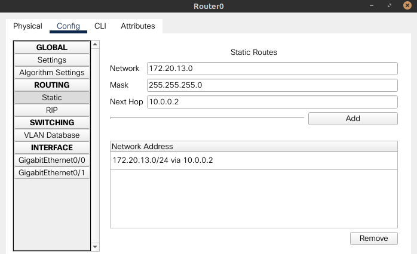

Objectifs pédagogiques
Les principaux objectifs de ce sujet de travaux pratiques sont :
- de comprendre les principes d'architecture des réseaux locaux – notamment par l'adressage statique IPv4 – en expérimentant la mise en place de LAN très simples ;
- de découvrir certaines caractéristiques des équipements réseau détaillées par le constructeur Cisco ;
- de découvrir, à travers la simulation « ralentie », le déroulement des protocoles à l'œuvre dans les transmissions de données, notamment ICMP, ARP, STP, DTP…
Pour traiter ces exercices, il est recommandé d'avoir étudié les chapitres R1‑I à R1‑III inclus du cours, et en particulier, d'avoir quelques bases sur l'adressage IPv4 (notion d'adresse IP, de masque). Des renvois aux principaux éléments de cours ou à des pages web d'information générale sont donnés au fur et à mesure des questions.
Mise en situation
Environnement

Tous les exercices sont à traiter dans l'environnement de simulation Cisco Packet Tracer. Ce logiciel gratuit doit être préalablement téléchargé et installé sur le poste travail (bien suivre la procédure indiquée au chap. R1‑II ).
Travail demandé
Effectuer les manipulations sur ordinateur en veillant à enregistrer au fur et à mesure le travail dans un fichier distinct pour chaque exercice, voire pour chaque question en cas de modification importante du réseau d'une question à l'autre. Il est recommandé de nommer ces fichiers de la forme R1tp2exonx.pkt où n est le numéro d'exercice et x la lettre de la question.
Répondre sur cahier ou fichier de texte aux questions qui attendent une réponse littérale.
- Mise en réseau de deux ordinateurs
- Dans la vue « logique » de l'espace de travail (bouton Logical activé par défaut), constituer la topologie matérielle de deux ordinateurs mis en réseau représentée en figure ci‑contre.
- Relever l'adresse MAC de l'interface réseau FastEthernet de chaque ordinateur (cf. l'infobulle obtenue en passant le pointeur de la souris sur les icônes des machines). Identifier le constructeur de ces interfaces via un site spécialisé comme celui‑ci .
- Quel type de câble symbolise la ligne pointillée noire ? Pourquoi ce choix est‑il fait W ?
- Que signifient les triangles verts sur cette liaison ?
- Configurer l'interface réseau FastEthernet de chaque ordinateur
PC0etPC1en leur attribuant respectivement les adresses IP statiques192.168.0.10et192.168.0.11(menu contextuelConfig). - Vérifier que ces adresses apparaissent dans l'infobulle des ordinateurs.
- De quelle catégorie d'adresses, privées ou publiques, s'agit‑il ? Pourquoi ce choix est‑il fait ? (cf. cours, chap. R1‑III )
- Quel masque de sous‑réseau est‑il automatiquement attribué aux interfaces réseaux ? Comment ce masque est‑il défini en notation CIDR ? (cf. cours, chap. R1‑III )
- Effectuer un essai de communication depuis
PC0versPC1en utilisant un PDU simple (protocol data unit – icône ). - En mode temps‑réel (bouton Realtime), vérifier que le scénario est concluant (successful).
- En mode simulation (bouton Simulation), cliquer sur le bouton lecture ▶ pour visualiser le déroulement de ce scénario. Combien de temps le scénario dure‑t‑il ?
- À quel protocole la transmission du PDU fait‑elle appel ? Dans le panneau de simulation, cliquer sur la ligne du PDU pour obtenir son analyse détaillée selon le modèle OSI (afficher les informations pour chaque couche via le bouton
Next Layer). - Par défaut, quels sont les protocoles affichés dans la liste des événements ? À l'aide des boutons Show All/None et Edit Filters, constater qu'on peut choisir les protocoles dont les PDU sont simulés.
- Effectuer un test similaire en employant la commande
pingsur une console de commande de l'ordinateurPC0(menuDesktop/Command Promp) en mode temps‑réel puis en mode simulation. - Combien de PDU ont été envoyés vers le destinataire ?
- Comment l'émetteur est‑il informé que le destinataire est accessible à la communication dans le réseau ?
- Depuis l'ordinateur
PC0, tester encore la commandepingavec successivement les 4 adresses destinataires ci‑dessous, en expliquant pour chacune le résultat obtenu : -
192.168.0.10 -
127.0.0.1 -
192.168.0.12 -
192.168.1.10 - Mise en réseau de six ordinateurs par un switch
- Dans la vue « logique » de l'espace de travail, constituer la topologie matérielle de réseau représentée en figure ci‑contre, avec six ordinateurs notés respectivement
PC0àPC5et un switch Cisco réf.2950‑24. - Combien de ports FastEthernet le switch compte‑t‑il ?
- Observer patiemment l'évolution automatique des symboles sur les connecteurs ? Expliquer globalement le phénomène en exploitant des connaissances générales sur le fonctionnement d'un commutateur W.
- À quel type de câble correspondent les lignes continues noires ?
- En consultant les informations inscrites dans l'infobulle du switch, que peut‑on dire des adresses associées à ses ports FastEthernet ? Peut‑on leur attribuer une adresse IP ?
- Avant toute attribution d'adresse IP aux machines, passer en mode simulation et cliquer sur le bouton lecture ▶. Observer le scénario durant deux minutes de temps‑réel. Que se passe‑t‑il ? Quels protocoles sont mis en œuvre ?
- Pour ne pas saturer le buffer d'événements par la suite, décocher les protocoles répétitifs observés à la question précédente (ils ne seront plus affichés dans la liste des événements). De plus, il faut cocher l'option :
⎕Buffer Filtered Events Only
dans l'ongletMiscellaneousde la fenêtre de paramétrage accessible via le menuOptions/Preferences…. - Configurer l'interface réseau FastEthernet de chaque ordinateur en leur attribuant respectivement les adresses IP statiques
192.168.0.10à192.168.0.15avec le masque de réseau/27(notation CIDR, cf. chap. R1‑III ). - Combien d'hôtes ce réseau peut‑il au plus comporter ? Quelle est son adresse de diffusion générale (broadcast) ?
- En mode temps‑réel, vérifier par envois de PDU simples qu'il y a une bonne communication entre chaque ordinateur.
- En mode simulation, observer le déroulement du scénario d'envoi d'un PDU simple de l'ordinateur
PC0vers l'ordinateurPC3. Quels protocoles sont mis en œuvre – et dans quel ordre – pour effectuer cet envoi ? Quel est le protocole qui génère le plus de messages ? - Supprimer le protocole ARP de la liste d'affichage puis tester la communication avec un PDU complexe (icône ) avec, pour émetteur, l'ordinateur
PC0et, pour destinataire, l'adresse192.168.0.31. - Observer le déroulement du scénario en mode temps‑réel puis en mode simulation. Combien de temps cet envoi dure‑t‑il en temps‑réel ?
- Effectuer un test similaire via la commande
pingdepuis une console de commande de l'ordinateurPC0(menuDesktop/Command Promp) en temps‑réel uniquement. Combien de réponses l'ordinateurPC0collecte‑t‑il ? Expliquer ce nombre. - En mode simulation, envoyer un nouveau PDU simple depuis l'ordinateur
PC0vers l'ordinateurPC2puis en sens inverse (duPC2vers lePC0). Que constate‑t‑on ? - Dans une console de commande de
PC0, effacer la table de résolution du protocole ARP via la commandearp -d(«d» pour delete). Recommencer alors les envois de PDU simples entrePC0etPC2. Que constate‑t‑on ? - Segmenter le réseau en attribuant respectivement aux interfaces FastEthernet des ordinateurs
PC3àPC5les adresses192.168.0.33à192.168.0.35avec le masque de réseau CIDR/29. - Déterminer l'adresse de ce nouveau segment du réseau ainsi que son adresse de broadcast.
- De quoi le réseau est‑il maintenant constitué ? Dans l'espace de travail, délimiter les différentes segments par des rectangles et en indiquant par une annotation leur adresse de réseau respective.
- En mode temps‑réel, tester par envois de PDU simples les possibilités de communication entre chaque ordinateur.
- En mode simulation, tester la diffusion broadcast sur les deux segments de réseaux par des envois de PDU complexes.
- Quelle peut être l'application concrète d'une telle architecture de réseau ?
- Extension matérielle d'un LAN
- dans le premier segment, jusqu'à 15 ordinateurs et une imprimante, tous situé dans une même pièce ;
- dans le deuxième segment, jusqu'à 8 ordinateurs et un serveur situés dans une autre pièce, le serveur pouvant être placé dans une pièce distincte des ordinateurs.
- Le plan d'adressage précédent peut‑il être conservé ? (Le nombre d'adresses initialement prévu est‑il suffisant ?) Pour répondre à cette question, suivre les indications ci‑dessous.
- Ajouter les équipements terminaux spécifiés qui n'étaient pas présents dans la configuration précédente. Pour les ordinateurs, on se contentera de mettre en place seulement les deux premiers et le dernier par ordre d'adressage dans chaque segment.
- En plus des équipements terminaux, d'autres équipements (switch, routeur) doivent‑ils être ajoutés ? Dans l'affirmative, choisir des références adaptées parmi celles proposées par le logiciel.
- Proposer un nouveau plan d'adressage, de préférence plus lisible que le précédent, en exploitant davantage la plage d'adresses privées
192.168.0.0/16. On veillera à : - laisser des adresses vacantes pour satisfaire aux nombres de postes exigés et pour permettre d'éventuels ajouts ultérieurs ;
- à ne pas employer l'identifiant de machine (host id)
1car ce numéro est usuellement attribué aux passerelles. - Dans l'espace de travail en vue logique, procéder aux modifications nécessaires.
- Effectuer ou modifier les raccordements pour qu'ils soient ordonnés sur les ports dans le même ordre que les adresses IP.
- Changer les adresses IP des interfaces réseaux FastEthernet pour qu'elles soient conformes au plan d'adressage.
- Dans l'espace de travail en vue physique (cliquer sur le bouton Physical), cliquer puis zoomer sur le bâtiment. Arranger la disposition matérielle des équipements conformément aux spécifications ci‑dessus.
- Placer le rack dans une pièce technique séparant deux pièces voisines pour héberger les deux segments du réseau.
- Répartir dans chaque pièce les ordinateurs et l'imprimante.
- Où le serveur est‑il installé ?
- Tester les communications au sein du LAN.
- Par envois de PDU simples et complexes, vérifier que la bonne communication sur chaque segment du réseau et l'étanchéité entre chacun.
- Modifier (temporairement) l'adresse du serveur pour que ce dernier soit inclus dans le premier segment et non pas dans le second. Vérifier par des PDU simples que cette modification est effective en termes de possibilités de communication.
- Interconnexion par routeur
- Choix du routeur
- En faisant des recherches sur l'Internet, comparer quelques références de routeurs disponibles dans la gamme Cisco proposée par le logiciel Cisco Packet Tracer.
- Dans l'espace de travail, en vue physique, placer dans le rack, au dessus des switchs, un routeur de réf.
1841. - Mettre hors tension le routeur puis protéger les deux emplacements des WIC (WAN interface card) par des couvercles. Ces emplacements ne seront pas employés dans l'immédiat.
- Mettre sous tension le routeur.
- Raccordement et paramétrage du routeur
- Dans l'espace de travail, en vue logique, raccorder les switchs des deux segments du LAN respectivement aux deux ports FastEthernet du routeur. Quel type de câble est requis, et pourquoi ?
- Attribuer à chacun de ces deux ports l'adresse IP avec l'identifiant d'hôte
1dans le segment respectif du LAN raccordé. Ne pas oublier de mettre les ports en service. - Dans les deux segments, attribuer comme passerelle par défaut (default gateway) à chaque équipement terminal l'adresse IP donnée au port correspondant du routeur.
- Vérifier que les symboles sur les liaisons switch ‑ routeur sont devenus verts.
- Tester les communications au sein du LAN.
- Par envois de PDU simples et complexes, vérifier en mode temps‑réel que tous les équipements terminaux du LAN peuvent communiquer entre eux, indépendamment de la segmentation imposée par l'adressage.
- En mode simulation, vérifier que le chemin parcouru par un PDU simple d'un segment à l'autre passe bien par le routeur.
- En interne, quelles liaisons le routeur met‑il en œuvre ?
- Extension géographique d'un LAN via une dorsale
- Déploiement matériel d'un LAN dans le nouveau bâtiment.
- En vue physique, dans la même ville, créer un nouveau bâtiment à quelques rues du bâtiment des exercices précédents.
- Dans une pièce de ce nouveau bâtiment, installer un rack et l'équiper avec un routeur et un switch, en choisissant les mêmes références qu'aux exercices précédents.
- Dans la même pièce, installer deux ordinateurs.
- En vue logique, effectuer les raccordements pour mettre en place une topologie en étoile.
- Adressage du LAN dans le nouveau bâtiment.
- Comme à l'exercice, procéder à l'adressage des ordinateurs en leur attribuant une adresse IP dans un nouveau segment et dans ce segment, en attribuant l'identifiant (host id)
1pour la passerelle par défaut. - Attribuer l'adresse IP avec l'identifiant
1au port FastEthernet du routeur raccordé au switch. - Configuration et interconnexion des routeurs.
- Dans chacun des deux bâtiments, avant d'éteindre le routeur, enregistrer sa configuration en mémoire NVRAM (non volatile).
- Équiper chaque routeur d'une interface de liaison série WIC-1T (supprimer l'éventuel couvercle obturateur de l'emplacement). Remettre les routeurs sous tension.
- Attribuer au port série de cette interface une adresse IP pour constituer la dorsale, un segment distinct des autres segments des LAN.
- En vue logique, raccorder les deux routeurs par liaison série. De quel type de liaison s'agit‑il ?
- Dans l'onglet de configuration du routeur, spécifier les routes statiques (cf. chap. R1‑II ) permettant de raccorder les différents segments du LAN ainsi constitué. On pourra s'inspirer de la figure ci‑dessous, sachant que les adresses qui y sont inscrites sont données à titre d'exemple (elles sont différentes de celles du présent exercice). 
- Tester les communications entre les deux LAN.
- Par envois de PDU simples, vérifier en mode temps‑réel que tous les équipements terminaux peuvent communiquer entre les deux bâtiments.
- Serait‑il possible de raccorder ainsi d'autres bâtiments pour former un LAN plus vaste ?
Dans un premier temps, on souhaite étendre le LAN de l'exercice précédent pour pouvoir raccorder, au même étage d'un bâtiment :
On part d'une copie du fichier R1tp2exo2d.pkt (répondant aux spécifications de la question 2.d.) renommé R1tp2exo3.pkt, pour se placer dans une démarche d'extension d'un réseau existant.

On souhaite maintenant interconnecter les deux segments du LAN constitués à l'exercice précédent. On utilise pour cela un routeur (cf. ci‑contre le symbole générique de cet équipement).
On part d'une copie du fichier R1tp2exo3.pkt (répondant aux spécifications de l'exercice 3) renommé R1tp2exo4.pkt.
On dans leur fenêtre de configuration respective. On souhaite pouvoir étendre géographiquement le LAN dans un nouveau bâtiment, distant de plusieurs centaines de mètres. Plutôt que de prolonger une liaison Ethernet à l'aide de répéteurs, on préfère créer un deuxième LAN, situé dans ce nouveau bâtiment, et d'interconnecter les deux LAN par une liaison série longue distante, dite dorsale (ou backbone).
On part d'une copie du fichier R1tp1exo4.pkt (répondant aux spécifications de l'exercice 4) renommé R1tp1exo5.pkt.